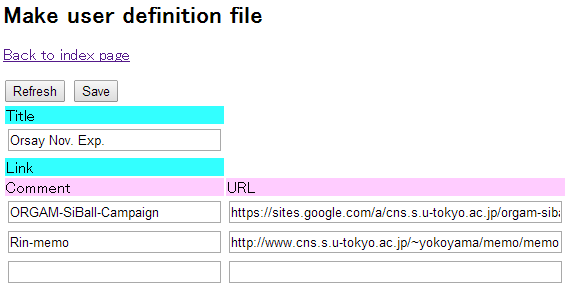
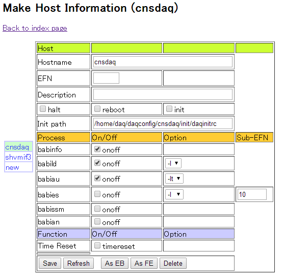
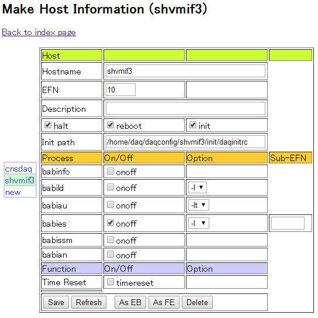
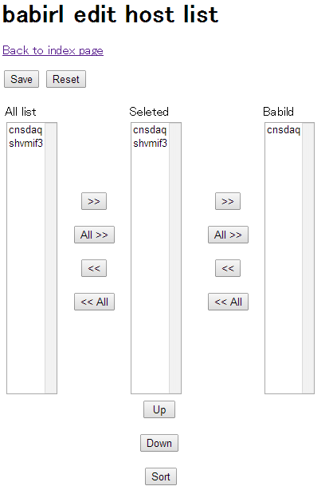

DAQ/webutilの使い方
Memo-DAQへ戻る
導入
- yum install httpd
- yum install php php-xml
- /etc/sysconfig/iptables に
-A INPUT -m state --state NEW -i eth0 -m tcp --dport http -j ACCEPT
を追加。（-i eth0 はwebutilを使うethernetを指定する。）
- service iptables restart
- /etc/httpd/conf/httpd.conf
- DocumentRoot を確認 ("/var/www/html")
- あるいはユーザーディレクトリを設定 (<IfModule mod_userdir.c>のUserDir
disabledをコメントアウトし、UserDir public_htmlのコメントアウトを外す。)
- 使用するディレクトリ(/var/www/html OR user dir)のOptions に +FollowSymLinks を追加する。
- service httpd start
- httpの設定をしたディレクトリに/usr/babirl/webutilへのシンボリックリンクを作成
- chmod 777 webutil/xml
- chmod 777 webutil/dat
- ブラウザからhttp://hostname/webutil/ (あるいはhttp://hostname/~username/webutil/)にアクセス
- 初回はPlease edit user definition file と表示されるのでリンクを辿る。（次回以降はEdit user definitionと書かれたリンクを辿る。）

ページタイトルとトップページに表示させたいリンクを入力しsaveボタンを押す。
- トップページからEdit host informationをクリック
- new をクリックしてDAQPCを登録します。
Hostname を入力し、As EBボタンをクリック、Saveボタンを押します。

- newをクリックしてVMIVME側を登録します。
Hostnameを入力し、As FEボタンをクリック、Saveボタンを押します。

- トップページからEdit host listをクリック
- 左のAll listからDAQPCを選択し、>>ボタンを２つ押して一番右のBabildに持っていきます。
Babild欄に入れたものが Scaler Monitor等で表示できる。

使い方
- DAQ Status Monitor
- DAQ Scaler Monitor
- babiconでsetscrnameを設定したスケーラの値を確認できます。
- webutil/babiscr.phpの310行目、
if(($vi+1)%2 == 0) $html .= "</tr>\n";
の2を変えると１行に表示するスケーラの数を変えられます。
- Raw data monitor は rubyなのでまだ試してません。
- Web configurator
- babiconで行ったseteflist, sethdlist, setrunname, setrunnumberと同等のことができます。
Memo-DAQへ戻る